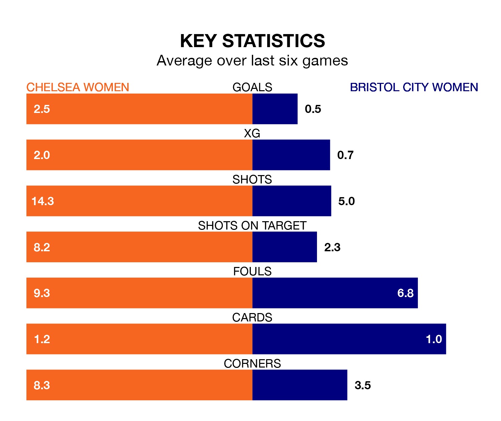

Struggling Chelsea Women face Bristol City Women at Kingsmeadow on Sunday looking to build on a win in their last league outing.
After securing all three points with a 3-4 victory over Liverpool Women on Wednesday, the Blues sit second in the FA Women's Super League.
They travel to play a Bristol City side 12th in the standings, who lost in their last match, 4-0 against Manchester City Women, on April 28.
Chelsea are in reasonable form in the FA Women's Super League, with four wins and two losses from their last six games.
With no wins and six losses over that period, Bristol City's form is much worse – they have taken no points from 18, compared to the Blues' 12.
With 56 goals in 19 games so far this season, the home team are the league's second-highest scorers with 2.9 goals per game. And they are conceding fewer than average, letting in 18 goals at a rate of 0.9 per game.
The Robins, meanwhile, are below average scorers, with 1.0 goal per game, compared to a league average of 1.6. They have conceded 2.9 goals per game.
In the last 10 years, Chelsea and Bristol City have played each other on 15 occasions. Chelsea won 14 of them and they drew once.
On average, the Blues scored 4.2 goals and the Robins 0.3 in those matches.
Their last meeting was on December 17, when Chelsea won 3-0 away.
Updated: 12:00 (UTC), 02/05/24